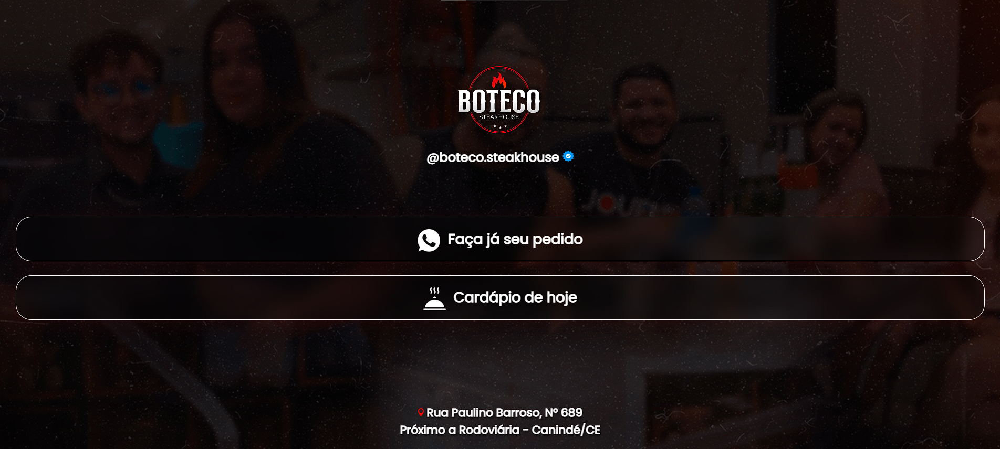
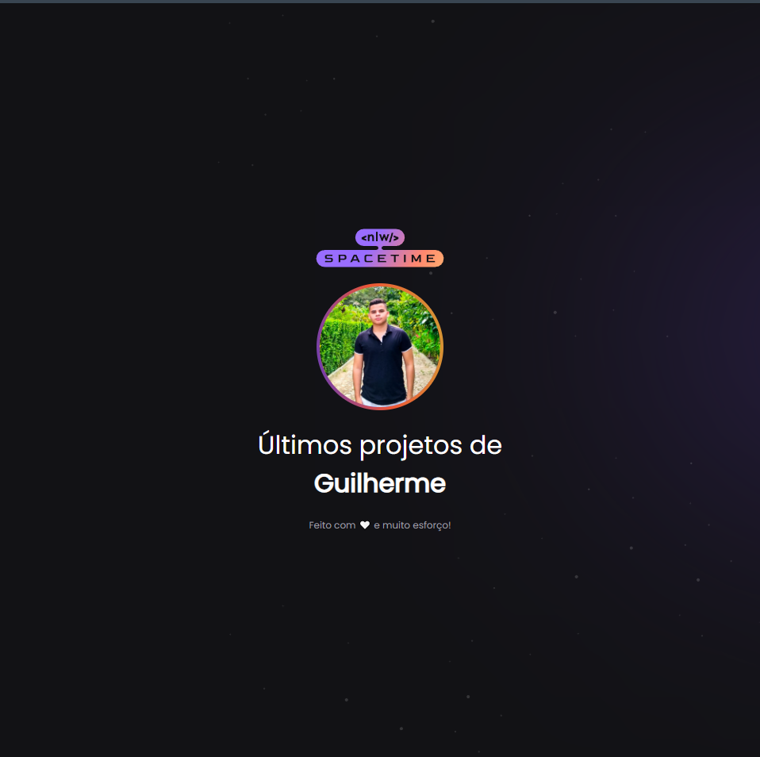

Março de 2023
Bio-Link para restaurante

Desenvolvi um mini site para um restaurante local, cujo objetivo é integrar
o cliente com o restaurante de uma forma mais rápida. O site redireciona o cliente de acordo com sua
necessidade, podendo ver o cardápio do dia ou indo direto para o WhatsApp do restaurante, realizando
o seu pedido de forma rápida e simples.
Maio de 2023
Últimos projetos

O site foi desenvolvido na semana NLW Rocketseat, porém o objetivo
primário do site era fazer uma espécie de Cápsula do tempo, contendo
memórias felizes. Eu aprimorei o site para este, para poder apresentar
meus projetos de forma mais rápida e simplificada.